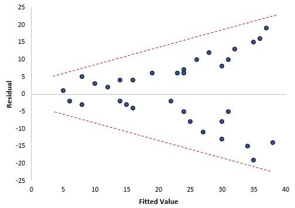

5 Voorwaarden
Voor het toepassen van lineaire regressie moet aan de volgende voorwaarden voldaan zijn.
- Er is een lineaire relatie tussen de afhankelijke variabele \(y\) en de onafhankelijke variabele \(x\).
- De residuen zijn onafhankelijk van elkaar (geen autocorrelatie).
- De residuen hebben dezelfde variantie voor elke x (homoscedasticiteit).
- De residuen zijn toevallig en normaal verdeeld.
- Tussen de onafhankelijke variabelen bestaan geen relaties (geen multicollineariteit).
Als aan een of meer van deze voorwaarden niet voldaan wordt, kunnen de resultaten van onze lineaire regressie onbetrouwbaar zijn.
Lineaire relatie
Er is een lineaire relatie tussen de afhankelijke variabele \(y\) en de onafhankelijke variabele \(x\).
Dit kun je het eenvoudigst beoordelen door het spreidingsdiagram te bekijken. Als het erop lijkt dat de punten in de plot langs een rechte lijn zouden kunnen vallen, dan bestaat er een soort lineaire relatie tussen de twee variabelen en is aan deze voorwaarde voldaan.
Wanneer niet aan deze voorwaarde voldaan wordt dan heb je de volgende opties:
- Pas een transformatie toe op \(x\) of \(y\). Veel gebruikte transformaties zijn: logaritme, vierkantswortel, reciproke.
- Voeg nog een andere onafhankelijke variabele aan het model toe. Bijvoorbeeld wanneer het spreidingsdiagram een paraboolvorm heeft zou je kunnen proberen om \(x^2\) als extra onafhankelijke variabele toe te voegen.
Onafhankelijkheid
De residuen zijn onafhankelijk van elkaar (geen autocorrelatie).
Er mag geen patroon zitten in opeenvolgende waarden van de residuen. Dit is eigenlijk alleen maar relevant bij het werken met tijdreeksen, waar je immers met opeenvolgende waarden te maken hebt.
Je kunt dit het eenvoudigst beoordelen door een residuendiagram te beoordelen. Er bestaan formele toetsen voor deze voorwaarde zoals de Durbin-Watson test (zie Hoofdstuk 2)
Wanneer er sprake is van autocorrelatie kun je de gegevens differentieren.
Homoscedasticiteit
De residuen hebben een constante (dezelfde) variantie voor elke waarde van x. Dit heet ook wel homoscedasticiteit. Wanneer dat niet het geval is dan is er spraken van heteroscedasticiteit.
Wanneer heteroscedasticiteit aanwezig is in een regressieanalyse, worden de resultaten van de analyse moeilijk te vertrouwen. Specifiek verhoogt heteroscedasticiteit de variantie van de schattingen van de regressiecoëfficiënt, maar het regressiemodel pikt dit niet op. Hierdoor kan het voorkomen dat een regressiemodel aangeeft dat een term in het model statistisch significant is, terwijl dat in feite niet zo is.
Je kunt dit het eenvoudigst beoordelen door in een spreidingsdiagram de residuen uit te zetten tegen de geschatte waarden. Bij heteroscedasticiteit worden de residuen steeds meer verspreid naarmate de geschatte waarden groter worden. Het patroon heeft de vorm van een kegel.

Er zijn een aantal manieren om te proberen de heteroscedasticiteit te laten verdwijnen:
- Transformeren van de afhankelijke variabele door de logaritme hiervan te nemen.
- Herdefinitie van de afhankelijke variabele. Dit kan niet altijd. Maar bijvoorbeeld in plaats van absolute aantallen besmette personen zou je het aantal besmette personen per 100.000 inwoners kunnen nemen, zoals bij COVID-19 vaak gebeurt.
- Gebruik gewogen regressie. Dit type regressie kent een gewicht toe aan elk gegevenspunt op basis van de variantie van de geschatte waarde. In wezen geeft dit kleine gewichten aan datapunten met hogere varianties, waardoor hun kwadratische residuen kleiner worden. Als de juiste gewichten worden gebruikt, kan dit het probleem van heteroscedasticiteit elimineren.
Normaliteit
De residuen zijn normaal verdeeld (dus toevallige waarden).
Deze voorwaarde kun je op een van de volgende manieren controleren:
- Bestudeer de verdeling grafisch: histogram, boxplot, QQ plot
- Analyseer scheefheid en kurtosis
- Gebruik statistische toetsen als Chi-kwadraat, Shapiro-Wilk en Kolmogorov-Smironov.
Wanneer niet aan deze voorwaarde voldaan wordt kun je het volgende doen:
- Ga na of er uitschieters zijn met een grote impact op de verdeling. Zoja, onderzoek dan of dit wil echte waarden zijn en geen foute invoerwaarden.
- Pas een transformatie toe op \(x\) of \(y\). Veel gebruikte transformaties zijn: logaritme, vierkantswortel, reciproke.
Verbetertips
Als de gegevens niet lineair gedrag vertonen kun je de onafhankelijke variabelen transformeren met wortel, kwadraat, logaritme.
Als de gegevens lijden aan heteroskedasticiteit, transformeer dan de afhankelijke variabele met behulp van wortel, kwadraat, logaritme, enz. je kunt ook de gewogen kleinste-kwadratenmethode gebruiken om dit probleem aan te pakken.
Als de gegevens multicollineariteit vertonen, gebruik dan een correlatiematrix om gecorreleerde variabelen te controleren. Laten we zeggen dat variabelen A en B sterk gecorreleerd zijn. Gebruik nu deze benadering in plaats van er één te verwijderen: zoek de gemiddelde correlatie van A en B met de rest van de variabelen. Welke variabele het hoogste gemiddelde heeft in vergelijking met andere variabelen, verwijder deze. Als alternatief kun je bestrafte regressiemethoden gebruiken, zoals lasso, ridge, elastic net, enz.
je kunt variabelen selecteren op basis van p-waarden. Als een variabele een p-waarde > 0,05 vertoont, kun je die variabele uit het model verwijderen, omdat we bij p> 0,05 altijd de nulhypothese niet verwerpen.